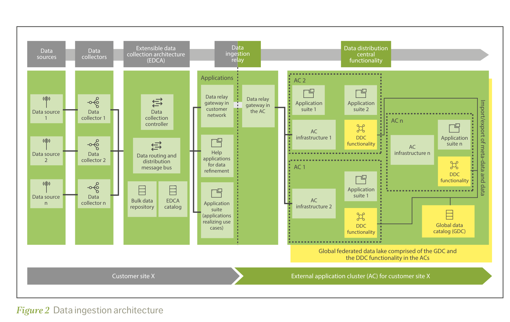

02 Industry & competition
行业环境或竞争现状
行业处于「愿景已定、研究展开、规范未冻、厂商抢位」的窗口。ITU已给出IMT-2030总体框架；3GPP Rel-20推进6G研究，Rel-21将成为首个规范性6G Release；数据框架、AI使能与跨域自动化仍在形成关键问题与候选方案。[S1] [S2] [S3]
2.1 6G数据架构的范式转变与数据管理层需求
5G的主架构叙事仍以连接、会话、网络功能和暴露为中心，数据分析主要集中在NWDAF、MDA等特定能力。6G的变化不是「多一个数据湖」，而是网络中几乎每个域都可能同时生产数据、消费数据、运行模型并执行动作：RAN产生无线测量、调度、波束、拓扑与感知数据；Core关联会话、策略与业务上下文；SMO/RIC承载管理与智能控制；边云提供训练、推理与孪生运行时。Nokia也明确把data prosumer、数据目录、抽象、产品与生命周期列为AI-native 6G使能能力。[S8]
6G数据架构范式转变
5G以连接和中心分析为主，6G走向分布式数据生产消费、近源处理和可信智能控制。
5G/5G-A 主导范式
6G 数据—智能原生范式
RAN / 接入 测量与用户流量
Core / 管理 会话、策略、OAM
中心分析能力 NWDAF / MDA / 湖仓
报表 / 优化建议
RAN数据生产/消费 无线事实 · ISAC · 本地AI
Core / 业务上下文 意图 · 会话 · 暴露
边云算力与孪生 训练 · 推理 · 仿真
SMO / RIC / OAM 跨时标策略与闭环
可信数据管理层 语义 · QoD · 契约 · 策略 · 证据
连接中心 → 数据/智能中心
范式变化不是取消网络功能，而是给分布式网络增加统一的数据理解、策略与证据层
图2｜范式转变。 从「特定分析功能消费数据」转向「每个域都是数据生产者/消费者（prosumer）」。右侧为本文综合，不是3GPP既定统一架构。
AI原生 数据成为模型生命周期燃料 训练、验证、部署、监控、回滚都依赖数据/特征/模型/策略版本一致。AI错误将从「判断偏差」升级为「网络动作风险」。
通感一体 网络成为高敏感数据生成器 ISAC产生位置、轨迹、目标与环境数据，必须近源最小化、用途绑定、短期保留，并把置信度作为产品属性。
边云一体 算力和数据位置共同决定架构 快环不能依赖远端目录；慢环可做跨域优化。架构要能在「数据到智能」和「智能到数据」之间动态选择。
数字孪生 网络状态需要一致快照 NDT必须关联拓扑、配置、遥测、模型与业务上下文；没有事件时间、版本和血缘，仿真结果不能成为闭环证据。
跨域自治 局部智能必须服从全局约束 RAN、Core、云、业务多个Agent可能目标冲突，需要意图分解、策略仲裁、风险预算、租约、熔断和人工接管。
生态开放 数据与能力将以产品/API外延 Open Gateway正在推动标准化网络API；但真正变现取决于跨运营商一致语义、计量、商业渠道与行业工作流，而非接口数量。
由六类场景反推：6G对数据管理层提出八项刚性需求
上述场景不是六个功能孤岛。它们共同改变了数据管理层的目标：从「把数据送到分析平台」转为「在多域、多时标、多主体之间，持续提供机器可理解、策略可约束、结果可验证的数据与制品」。因此，6G数据管理层至少应满足以下需求。
R1
统一发现与语义寻址
消费者不仅要知道数据位于哪个接口/Topic，还要知道对象、时间、空间、配置版本、业务含义和权威源。RAN小区、E2对象、O1 DN、Core会话、云资源必须可关联。
验收：跨域对象映射率、语义版本覆盖率
R2
按需采集与近源减量
ISAC、UE测量和高频遥测不能默认全量上送。管理层需按消费者SLO编排采样、过滤、聚合、特征提取、匿名化，并决定数据移动还是模型下沉。
验收：重复采集下降率、跨域字节/有效任务
R3
跨时标多模式交付
亚10ms内环、Near-RT、Non-RT/OAM和月度训练不能共享同一在线依赖。需同时支持本地状态、流、变更捕获、批、联邦查询、缓存和异步制品同步。
验收：分时标P99、新鲜度与截止期达标率
R4
通信级数据质量 QoD
完整性与新鲜度不够。无线数据还要描述采样代表性、对象/频段/波束覆盖、时间同步误差、配置一致性、测量置信度和训练—服务分布偏差。
验收：质量信封覆盖、suspect/incomplete比例
R5
数据—模型—策略—动作血缘
每个模型结论和网络动作必须可追溯到输入数据、特征定义、模型版本、策略、作用域和结果；反馈还要能反向修正采集、质量与模型。
验收：端到端证据链覆盖率、回放成功率
R6
用途、安全与主权强制
身份、同意、目的限制、驻留、保留和删除必须贯穿查询、API、导出、特征库、向量索引与模型训练，而不是只在目录挂标签。
验收：跨路径策略一致率、删除传播时长
R7
有界智能与冲突治理
多个Agent、模型和闭环可能争夺同一资源。数据管理层需提供身份、委托权限、风险预算、动作租约、冲突仲裁、仿真、熔断和人工接管证据。
验收：越权拦截、无效动作率、回滚耗时
R8
数据产品与跨组织运营
向Core、行业平台和伙伴输出的数据需具备Owner、契约、QoD、用途、SLO、成本与退出机制，并能与CAMARA/Operate API、数据空间合同和计量体系衔接。
验收：复用消费者数、契约合规与单位收入
数据管理层的目标由此明确：不是建立一个更大的数据池，而是建立一套跨域、跨时标的「数据供应与行动证据控制系统」 。它必须允许执行分布在RAN/Core/边云，同时统一语义、质量、策略与责任。
2.2 数据编织能力全景、演进、与6G结合及关键挑战
在展开能力清单前，必须先回答核心问题：Data Fabric能否满足R1—R8？ 数据编织不是6G新增网元，而是一种跨异构、分布式环境的数据管理与集成设计：以主动元数据、语义、质量、策略和编排构成逻辑控制面，在不强制物理集中前提下交付数据产品。它与6G需求高度同构，但通用企业Data Fabric并不能原样进入通信网络。
结论：架构机制总体适配
数据分布但元数据统一、控制与执行分离、多模式集成、主动元数据、数据产品和贯穿治理，分别对应R1/R2/R3、R5、R8与R6。Data Fabric可以成为6G数据管理层的设计骨架 ，尤其适合Non-RT/管理域、跨域数据供给及快环的环外支撑。
但必须通信级增强
通用Fabric缺少RAN对象与时空语义、无线QoD、亚秒时标隔离、动作安全、NDT证据门槛和多Agent冲突治理。它不能替代RAN协议、SA2/SA5功能或O-RAN接口，也不能成为毫秒快环的远端在线依赖。
L6
业务、生态与网络行动 网络API · 行业数据空间 · RAG/Agent · 运营闭环 · 自动控制
成熟度：传统消费高；受治Agent低
L5
数据产品与可信自助 产品目录 · 数据契约 · 语义指标 · QoD/SLO · 计量与价值
成熟度：试点增多，跨域语义偏弱
L4
主动元数据与智能控制面 目录 · 血缘 · RAN/Core语义 · 策略 · 推荐 · 影响分析 · 自动化
成熟度：被动目录成熟，主动闭环中等
L3
集成、编排与跨时标数据平面 批/变更捕获/流 · 联邦查询 · O1/E2/A1/R1适配 · 缓存 · 工作流
成熟度：中高；多接口统一语义不足
L2
近源处理、运行时与存储节点 DU/CU/MEC处理 · SMO/Non-RT · 湖仓 · 特征/向量/图 · NDT
成熟度：组件高；跨域编排中等
L1
分布式权威数据源 UE · RU/DU/CU · RIC · Core NF · O-Cloud · OSS/BSS · ISAC/NTN
成熟度：数据存在；权威语义分散
横切
通信级保障 身份 · 质量 · 安全隐私 · 时间同步 · 驻留 · 审计 · 可观察 · 能耗/成本
难点：跨路径一致强制与可证明
当前成熟度：基础组件成熟，通信级控制闭环未成熟
成熟度必须分层判断，不能因为目录、湖仓或流平台已经商用，就宣称「6G Data Fabric成熟」。截至研究截点，L1—L3的大部分组件可买可建；真正决定Fabric是否成立的L4主动元数据、L5产品化、R7有界智能和跨路径横切治理仍处在试点或研究阶段。
组织落地闸门：不能从连接器直接跳到自治
G0
边界与语义 场景、Owner、对象、时间、配置、权威源和用途明确；没有这一步，自动化只会传播歧义。
G1
只读可观察 目录、Schema、QoD、血缘可查询，先证明能回答「哪份数据对应哪个网络状态」。
G2
产品与契约 高频输出产品化，契约进入持续集成，消费者、成本、复用和退出可度量。
G3
影子闭环 系统只给建议，对照人工与真实结果；高风险动作先在孪生/沙箱演练。
G4–G5
有界自治与跨域 白名单低风险动作自动执行；内部证据稳定后再向Core、行业和伙伴供给产品。
成熟度结论： Data Fabric作为企业数据架构已进入产品化阶段；作为6G通信级数据管理层则总体位于G1—G2、局部G3 。厂商已发布的自治平台不等于跨RAN/Core/OSS/BSS、跨厂商的完整6G Fabric已成熟。
结合原则： Data Fabric不应进入所有实时关键路径。设备/RAN内环使用本地状态、预编译策略与已验证模型；Near-RT使用边缘缓存、流式特征和受限动作；Non-RT/SMO承担历史、训练、语义、治理和策略；跨域只供给最小必要的数据产品。
能力演进不是「平台越大越先进」，而是控制面逐步主动化
被动采集有源、有管道
可观察目录、血缘、QoD
可产品化契约、语义、SLO
影子闭环建议与结果对照
有界自治白名单、回滚、证据
适配性论证后的剩余挑战
挑战不是对Data Fabric适配性的否定，而是从通用数据架构走向通信级控制系统时必须补齐的工程与治理门槛。
图3｜面向6G的数据驱动分布式自治架构（DDAA）。 图中网络控制、数据与智能单元通过接口协同，说明数据与智能已成为6G研究的一等对象。来源：Electronics 2026, 15(1), 102，CC BY 4.0；学术架构，不是3GPP规范。[S17]
2.3 标准与厂商竞争格局
标准竞争的核心不是「是否出现一个名为Data Fabric的新网元」，而是哪些组织定义数据的来源、语义、质量、发现、处理、暴露、安全和行动边界。当前职责分散且互补：RAN定义无线事实与接口，SA5管理数据与AI/NDT生命周期，SA2研究系统级6G数据框架，O-RAN开放RAN管理与智能控制，TM Forum/GSMA/CAMARA连接自治运营与商业暴露。
厂商路线：不是简单的「Mesh vs Data Plane」二选一
竞争维度
Ericsson
Huawei
Nokia / 平台生态
数据架构主张
AI-ready data mesh、联邦数据湖、common data plane；强调采集一次、授权复用和数据/智能动态放置。
6G专用Data Plane研究；DO/DA/DCP进行数据拓扑编排、近源操作与发布订阅分发。
Data mesh / distributed data architecture、data prosumer、数据目录与AI原生使能；云与数据平台争夺目录/湖仓/AI工具入口。
可确认产品锚点
NWDAF、EIAP/rApps、CCES、2025 Telco DataOps Platform及Aduna/API生态；EFDL应视为架构元素，不单列为成熟产品。
[S21] AUTINOps已有IOH跨无线/IP/传输/能源部署案例；AI Core/AgenticCore、Network Digital Map、Open Gateway是不同层次锚点，不可自动拼成统一6G平台。
[S22] Nokia 2025 Autonomous Network Fabric与Data Suite直接提供数据产品、目录、血缘、质量及多厂商适配；Microsoft/AWS/Google/Databricks/Snowflake构成数据与AI执行层竞合生态。
[S23] [S24] 潜在控制点
运营商覆盖 + SMO/RIC应用生态 + Core/API + 数据集成平台。
RAN—Core—IP—Cloud—AI算力—终端全栈协同与标准输入能力。
开放标准话语 + 多厂商中立叙事；超大云/数据平台控制开发者、Catalog、Agent工具链。
证据边界
尚无公开、运营商中立证据证明统一跨RAN/Core/OSS/BSS的Fabric已在多运营商、多厂商环境广泛部署；EIAP、NWDAF、DataOps是不同产品。
IOH指标来自厂商/客户联合案例，证明AUTINOps部署而非DO/DA/DCP商用；后者仍是候选研究架构，AgenticCore部署证据也应单独评估。
Nokia产品发布证据充分、广泛命名客户证据仍有限；Google Telecom Data Fabric截至截点为Private Preview，云数据优势不自动转化为RAN闭环控制权。
[S25]
证据分层： 「已有运营商部署」不等于「已形成跨域统一Fabric」；「厂商已发布产品」不等于「已广泛商用」；「标准贡献被合并进Draft TR」不等于「形成规范性TS」。本报告把产品、参考架构、标准输入、原型和愿景分别判断，避免用同一成熟度描述。
竞争本质： 设备商争夺「网络数据如何生成、减量、关联和转化为动作」；云/数据平台争夺「数据存储、Catalog、模型与Agent工具链」；API聚合商争夺「开发者入口、跨运营商一致性与计费」。长期胜负不在新网元名称，而在跨域语义、QoD、可信执行和生态分发能否形成复利。
E
2.3.1 Ericsson：以联邦数据管理连接网络自动化与API生态
路线特征：演进式、平台组合式；从「采集一次、授权复用」扩展到AI-ready data mesh和6G common data plane。
产品 C1/C2 · 架构 A · 愿景 V

下载架构图 · 原始论文 图4｜Ericsson Data Ingestion Architecture。 EDCA汇集源数据，经DRG跨域转发，DDC与Global Data Catalog支持外部应用集群和联邦数据湖。图源：Ericsson Technology Review 2021，Figure 2；为研究引用仅裁切页面空白，版权归Ericsson。
架构主线：数据摄取 → 联邦网格 → 智能平台
2021架构先解决重复采集：源数据进入EDCA，应用在客户侧或外部应用集群消费；DRG承担跨边界数据中继，DDC与Global Data Catalog协同形成联邦数据湖。2026 AI-ready data mesh又把数据源、摄取、refinement & governance、consumer support串成面向AI与多Agent的参考架构，强调计算靠近数据、数据按产品与授权复用。[S9] [S10]
6G愿景中的common data plane进一步提出网络数据的采集、传输、潜在存储与治理，并由模型编排器选择「把数据送到智能」还是「把智能送到数据」。这是一条从现有摄取/自动化产品向6G分布式数据基础设施延伸的连续路线，但common data plane不是3GPP标准。[S9]
成熟度上，各层并不一致：Swisscom等合同证明EIAP进入运营网络；Mediation/Telco DataOps拥有成熟采集加工底座，Grameenphone案例披露每日超过60亿条记录；但这些数字不证明AI-ready data mesh、EFDL或common data plane已按相同规模形成统一产品。[S35] [S36]
商用锚点 NWDAF、EIAP/rApps、CCES与2025 Telco DataOps Platform分别覆盖分析、自动化、暴露和数据加工。
参考架构 AI-ready data mesh、EFDL和早期数据摄取架构描述跨域数据管理机制。
6G愿景 Common Data Plane与intelligent fabric强调连接、算力、云、数据和AI协同。
生态外延 Aduna将CAMARA网络API聚合到跨运营商销售渠道，但它是独立合资公司。
优势控制点 全球运营商关系、SMO/RIC应用生态、Core分析和API渠道可形成演进复利。
关键短板 产品与架构名称较多，尚无运营商中立证据证明已组合成跨域统一Fabric。
竞争判断 Ericsson不会押注单一新网元，更可能用平台组合占据数据—自动化—API链路。
H
2.3.2 Huawei：以专用数据面研究连接全栈智能与Agent闭环
路线特征：研究架构激进、产品桥梁广；DO/DA/DCP提出独立数据协作逻辑，AUTINOps提供当前部署证据。
部署 C2 · 产品 C1 · 原型 P · 标准输入 S
下载架构图 · 原始页面 图5｜Huawei提出的6G Data Plane。 控制面由DO编排数据拓扑，DA/DPF在终端、网络和边缘执行数据/AI处理，DCP/Data Spine以发布订阅解耦生产者和消费者。图源：Huawei 2024，原图未修改；厂商研究架构，不是3GPP既定方案。
架构主线：服务需求 → 数据拓扑 → 近源执行 → 异步分发
DO将服务需求拆成采集、过滤、聚合、转换和分析等操作，依据DA/DPF能力形成任意拓扑；DA既可作为源，也可承载模型和数据处理；DCP用消息代理、队列和Pub/Sub分发非连接类数据。方案直接回应AI/ISAC的多输入、多处理、多输出问题，并给出与RocketMQ的原型比较。[S12]
但DO/DA/DCP的技术价值与标准状态必须分开：它证明了「拓扑编排、近源算子、异步多消费者」值得研究，不证明必须引入独立Data Plane或这些名称会进入3GPP。NET4AI同样属于network-for-AI的研究路径。[S13]
AUTINOps则是当前商用桥梁：Platform层以跨域DTN、EDNS 2.0和统一语义数据底座形成认知基础，Agent层承载场景数字员工，Service层组织专家监督与Agent闭环。IOH联合案例披露其已覆盖无线、微波、IP、传输和能源域，故障一次闭环率80%、MTTR下降15%、年Agent调用超过200万；这些是厂商/客户联合数据，能证明部署，不能证明6G专用Data Plane商用。[S37] [S38]
当前部署 AUTINOps/IOH案例覆盖无线、微波、IP、传输和能源域，显示跨域孪生与多Agent运维已进入生产。
产品桥梁 AI Core/AgenticCore、Network Digital Map与Open Gateway分别连接Core、IP孪生和生态开放。
研究架构 DO/DA/DCP与NET4AI针对6G AI/数据协作，不是现网产品或既定NF。
标准输入 SA5材料提出DMFW、Data QoS、Agent Fabric、NDT sandbox；部分内容进入Draft TR编辑过程。
优势控制点 RAN—Core—IP—Cloud—AI算力—终端覆盖广，可把近源处理与全域管理形成全栈协同。
关键短板 部署案例来自厂商/客户联合披露；研究架构、产品路线和标准共识之间仍有距离。
竞争判断 不宜复制DO/DA/DCP命名，应识别其背后的可组合算子、数据QoD和异步分发需求。
N
2.3.3 Nokia：把Data Mesh产品化为自治网络的统一智能层
路线特征：产品命名最直接；Autonomous Network Fabric + Data Suite连接电信数据产品、可观察性、解释性AI与多厂商自动化。
产品 C1 · 有限部署证据 · 架构 A/S
下载架构图 · 原始白皮书 图6｜Nokia Autonomous Network Fabric。 底层多云Fabric承载Sense—Think—Act智能循环，通过Fabric Experience与API连接AN Apps，再向Network Monetization Platform和Marketplace暴露。图源：Nokia 2025，p.7；仅裁切说明文字与页脚，版权归Nokia。
架构主线：域自治数据 → 公共Fabric → 数据产品 → 解释性自动化
Nokia的分布式蓝图允许各网络域保留采集、加工、存储和AI闭环自治，通过common data fabric layer与common data lakehouse共享purpose-built data。2025 Autonomous Network Fabric把这一逻辑产品化为跨厂商统一智能层，组合统一数据管理、360°可观察、telco-trained AI、安全和自动化应用。[S23] [S31] [S39]
Data Suite进一步以可复用数据产品、TM Forum语义、目录、血缘、质量和多厂商适配支撑Glass-Box AI；与Google Cloud合作使其可在公有云、本地与混合云部署。它是三家中最接近「数据产品 + Fabric + 自治」显式商品组合的路线。[S24]
KDDI的20万4G/5G RAN异常检测、stc的Cognitive SON和Indosat节能部署证明Nokia域应用与执行组件可在商用网运行；但这些案例不能替代「AN Fabric已跨RAN/Core/传输形成统一生产闭环」的证据。[S32] [S33] [S34]
产品形态 Autonomous Network Fabric是统一智能层；Data Suite提供电信数据产品和Data Mesh工具。
规模信号 公开页面披露匿名Tier-1客户25万小区、27万报告/秒，属厂商数据而非独立审计。
6G主张 Holistic data framework/data prosumer强调目录、抽象、产品和AI生命周期。
生态协同 Google Cloud提供Vertex AI、BigQuery与混合云承载，但不定义网络域语义。
优势控制点 产品定义聚焦数据产品、多厂商语义、解释性与端到端可观察，贴近运营商自治诉求。
关键短板 命名客户与广泛部署证据弱于产品发布力度；大规模指标来自匿名案例。
竞争判断 Nokia证明Data Fabric已从白皮书概念进入可售产品，不能再仅作为相邻路线旁注。
2.3.4 相邻竞合者：云、湖仓与API聚合商控制外层入口
云平台 Microsoft / Google / AWS 控制云基础设施、数据/模型运行时、Agent工具和开发者生态。Google Telecom Data Fabric仍为Private Preview；云平台通常依赖设备商/OSS伙伴完成网络采集与执行。
数据平台 Databricks / Snowflake 控制湖仓、Catalog、跨企业共享、流批与MLOps，适合作为可替换数据/AI后端；但不具备RAN快环、3GPP/O-RAN对象语义和网络动作安全的天然优势。
API渠道 Aduna / CPaaS / Marketplace 控制跨运营商聚合、开发者触达、目录、使用量和计费。其商业势能会倒逼运营商内部先完成数据产品化和服务行为一致性。
2.4 行业现状小结：能力方向趋同，架构形态和控制权尚未收敛
把标准与三家路线放在一起，可得出五项现状判断。它们比「谁已经拥有完整6G Data Fabric」更符合公开证据。
共识已形成 数据必须分布式接入、近源处理、统一语义/QoD、产品化供给，并与AI/Agent和闭环证据关联。
标准未冻结 SA2/SA5仍是Rel-20研究；独立数据面、新NF、增强既有功能或混合实现均未定型。
产品先于6G EIAP/DataOps、AUTINOps、Nokia AN Fabric已用5G-A/OAM场景验证部分能力，成为6G前置桥梁。
成熟度不均 采集、湖仓、流和目录成熟；跨域主动元数据、QoD、Agent治理和高风险闭环仍在G1—G3。
竞争跨层展开 设备商争语义和执行，云/数据平台争运行时，聚合商争渠道；运营商争主权和可替换性。
尚无绝对领先 没有运营商中立证据证明任何一家已在多运营商、多厂商环境广泛部署完整跨域Fabric。
现阶段最稳健的断言是：产业已经确认「需要哪些能力」，但仍在竞争「以什么架构组合、由谁控制、怎样证明价值」。


{kind=link}